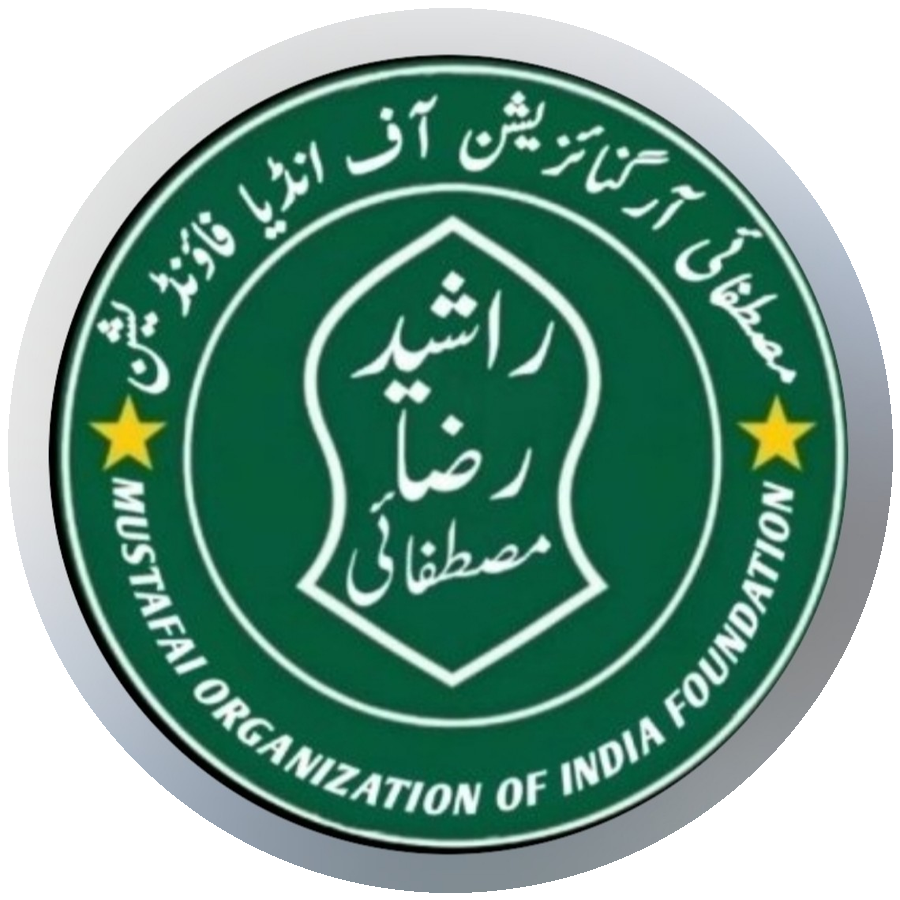

01
✳
Education & Opportunity
Encouraging learning, awareness and opportunities that help people move forward.
↗
MustafaiOrganization of India FoundationCOMMUNITY • COMPASSION • CHANGE
Working together to build a more caring, empowered and resilient community.
Mustafai Organization of India Foundation is a registered foundation based in Kanti, Muzaffarpur, Bihar. We believe that meaningful progress begins when people come together with compassion, responsibility and a shared purpose.
Our aim is to contribute to the well-being of communities and encourage positive, inclusive change. We welcome individuals and well-wishers who want to support responsible community initiatives.
Connect with the foundation ↗Our focus areas can grow with the needs of the community. Get in touch to learn about current initiatives.
Encouraging learning, awareness and opportunities that help people move forward.
↗Supporting a culture of care, dignity and awareness around community well-being.
↗Building connections and encouraging collective action for people in need.
↗These are broad focus themes, not a claim of specific completed projects or impact figures.
Alone we can do so little;
together we can do so much.
Official registration information as provided by the foundation.
Every act of generosity can help strengthen community-led work. Choose to support the foundation and help community-led initiatives grow.
Online UPI donations will be enabled after the foundation adds its verified UPI ID. Until then, use the Donate Now button to request official donation details by email.For collaboration, volunteering, donations or general enquiries, contact the foundation by phone or email. Follow our official Instagram page for updates.
C/O MD Sattar, Village Barauna, Tola-Bharara,
Kanti, Muzaffarpur, Bihar – 843109, India.